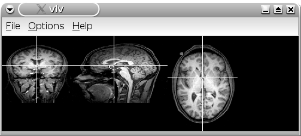
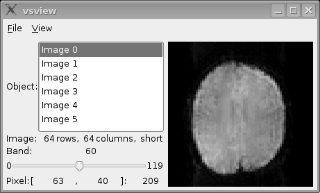

The Lipsia-feeds package contains an example MRI data set to illustrate data processing
in Lipsia. This example data set includes
3D high-resolution anatomical data and functional data originating from
a finger tapping experiment. Both anatomical and functional data are
available in the Lipsia and the Analyze data format.
For using the example MRI/fMRI data set, the Lipisa-feeds package (lipsia-feeds...rpm)
must be installed.
Note that Lipsia is using the natural convention, i.e. L=L and R=R. Therefore,
in the Lipsia data format the anatomical and functional data are stored in this natural convention.
In contrast, in the Analyze files the data are stored in the radiological convention,
i.e. L=R and R=L.
The example data first contains an individual 3D high-resolution anatomical data set.
The data has a resolution of 176x240x170 voxels (170 axial slices). The voxel resolution
is 1x1x1.5mm (i.e. non-isotropic). The data set is available in the Lipsia data format. This file has the
extension '.v'. In order to demonstrate the data conversion, the data set is also available in the
Analyze data format. The two corresponding Analyze files have the extensions '.img' and '.hdr'.
structural.v.bz2: 3D anatomical data set in the Lipsia format
structural.img.bz2: 3D anatomical data set in the Analyze format
structural.hdr: Analyze image header file
Before use, files with the extension '.bz2' have to be uncompressed, e.g.
bzip2 -d structural.v.bz2
The anatomical Lipsia data set can then be viewed using the command
vlview -in structural.v

The example data set further contains functional MRI data from a finger tapping experiment.
The data consists of 120 volumes (scans) with a repetition time of 2 seconds. Thus,
the length of the experiment was 240 seconds. The experiment consists
of three 40 seconds finger tapping blocks. Six functional slices (axial) with an
in-plane resolution of 3x3mm (64x64 voxel) and a slice thickness of 4.5mm were measured.
The data set is available in the Lipsia data format. This file has the
extension '.v'. In order to demonstrate the data conversion, the functional data is
also available in the 4D-Analyze data format. The two corresponding
Analyze files have the extensions '.img' and '.hdr'.
data.v.bz2: 6 functional slices in the Lipsia data format
data.img.bz2: 6 functional slices in the Analyze data format
data.hdr: Analyze image header file
slicetime.txt: Slice timing information for Analyze data
design.txt: Design file (3 finger tapping blocks a 40s)
Before use, files with the extension '.bz2' have to be uncompressed, e.g.
bzip2 -d data.v.bz2
The data set can be viewed using the command
vsview -in data.v

Note that 'vsview' is a very
simple viewer which, however, is able to visualize an entire 4D
functional data set. This can be useful for a first check of the data. A more
flexible and better way of visualizing Lipsia
data is the use of the viewers 'vlv'
and 'vlview'.